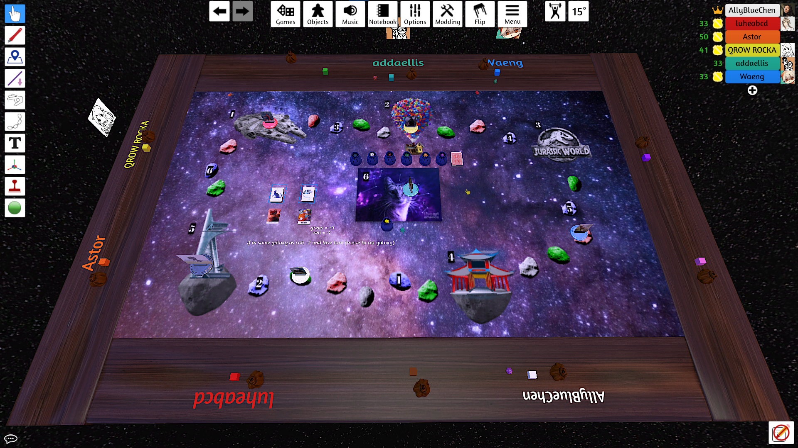
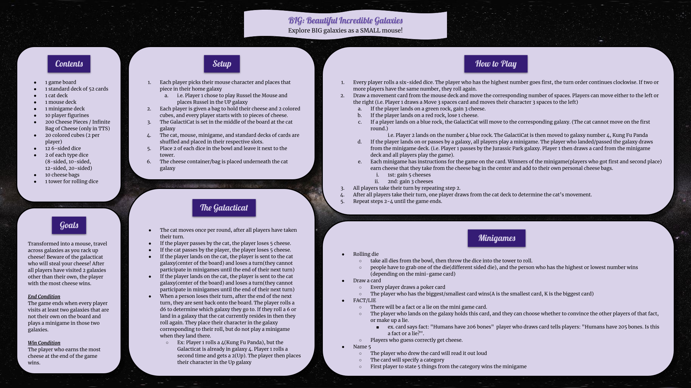

Overview
BIG: Beautiful Incredible Galaxies is a tabletop adventure game where players travel between movie-inspired galaxies, collect cheese, compete in minigames, and navigate the threat of the GalactiCat.
Designed for 4–8 players, the game combines exploration, competition, and uncertainty while giving players opportunities to make meaningful strategic choices.
Game Pitch
We interpreted “BIG” in several ways: a large-scale galaxy adventure, the contrast between a large cat and small mice, famous movies and franchises, and the acronym “Beautiful Incredible Galaxies.”
Core Gameplay
Players begin in their home galaxy and draw movement cards to travel around the board. They can choose which direction to move, allowing them to make strategic decisions about where to go.
Landing on or passing a galaxy triggers a minigame for all players. Players can gain cheese from minigame victories, collect cheese from beneficial spaces, and lose cheese or face penalties through interactions with the GalactiCat.
The game ends when every player has visited at least two galaxies that are not their own and played a minigame in those galaxies. The player with the most cheese wins.

Design Process
We began with many different interpretations of the theme “BIG.” Rather than choosing one idea, our team combined several concepts into a single game centered around mice traveling through movie-inspired galaxies while collecting cheese and dealing with the GalactiCat.
We explored different approaches to movement, the GalactiCat, player roles, galaxy structure, minigames, and win conditions before building the version we would take into playtesting.
BIG Playtest 1
Our first major playtest showed that too much of the game depended on random outcomes. Most of the original minigames were based on dice or cards, and playtesters felt that the game needed more strategic opportunities.
We responded by adding more strategic minigames, including challenges based on naming characters and identifying facts and lies. We also introduced player-controlled movement direction, giving players more agency while navigating the board.
We also adjusted the GalactiCat system and added starting cheese so players could better interact with the game's resource and penalty systems.
BIG Playtest 2
Our second major playtest revealed a different problem: players had difficulty understanding how to play the game from the rulebook alone.
Playtesters had questions about movement, discard piles, GalactiCat movement, minigame instructions, and what happened when a player entered the cat galaxy. They also found it difficult to keep track of the galaxies they had visited.
We used this feedback to clarify the rulebook, improve the organization of the board and its components, refine the GalactiCat rules, and simplify several interactions.
GalactiCat Design
The GalactiCat originally began as a possible player-controlled role in a one-versus-many game. We ultimately changed it into a shared system so that every player could participate in minigames while still facing a common threat.
Its movement was designed to create uncertainty and tension without completely determining the outcome. Players had to consider its location when choosing where to move and deciding which risks to take.
Minigame Design
Minigames became a major part of the game's identity. Our early versions relied heavily on random outcomes, so we expanded the set to include both chance-based and more strategic challenges.
The final set included dice challenges, card comparisons, fact-or-lie challenges, and “Name 5” challenges. This combination preserved uncertainty while giving players additional opportunities for skill, knowledge, and decision-making.
Final Design
After multiple rounds of iteration, we arrived at a game that balanced uncertainty with meaningful player choice. Directional movement gave players more agency, while a mix of chance-based and strategic minigames created different ways to earn cheese.
The GalactiCat added an ongoing source of tension without becoming the sole determinant of the outcome, and the final rules were refined to make the game easier to understand and play.

Gameplay & Team Walkthrough
Watch our team play through The BIG Game and explain the gameplay, rules, and design.
Design Documentation
Our design documentation records the evolution of the game from initial brainstorming through playtesting and iteration. It includes the game pitch, rules, post-mortem, and detailed design notes from our development sessions.
View Full Design Document ↗Reflection
The biggest lesson I took away from designing The BIG Game was that adding more features does not necessarily create a better player experience. Our early version had many ideas, but players had fewer meaningful choices than we expected because so many outcomes were determined by chance.
Playtesting also showed me that a game can be enjoyable while still having significant usability problems. Watching another team try to play the game using only our rulebook exposed ambiguities that we had overlooked. This taught me to evaluate not only whether a game works mechanically, but also whether players can understand how to interact with it.